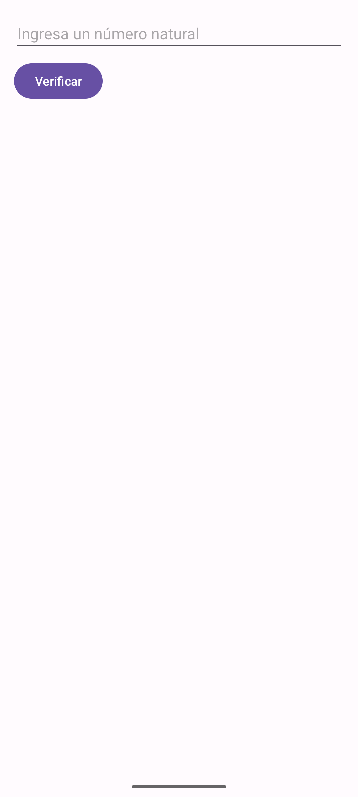
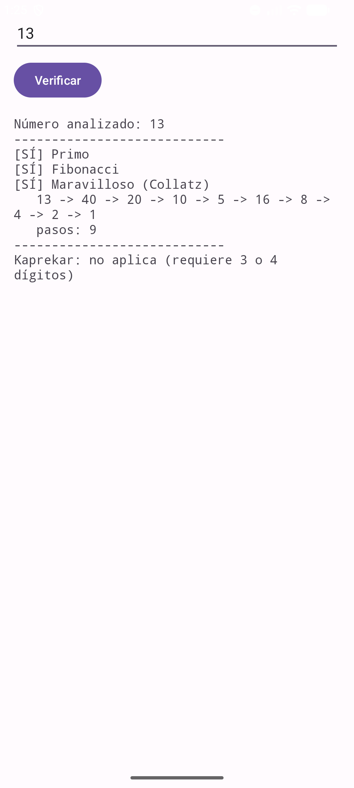
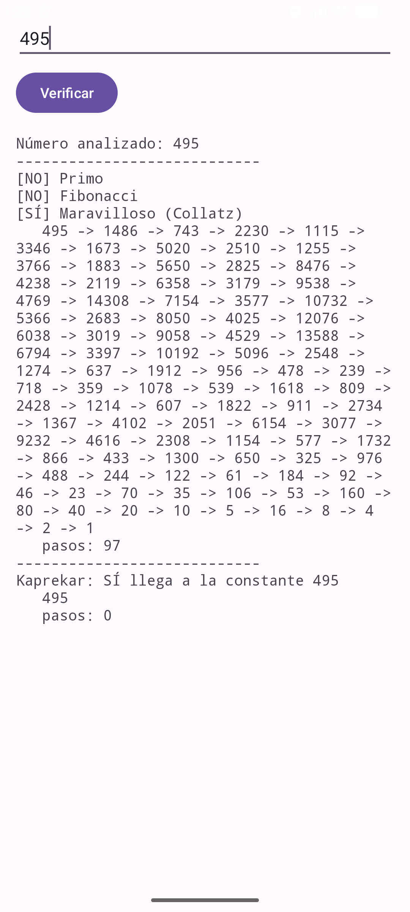
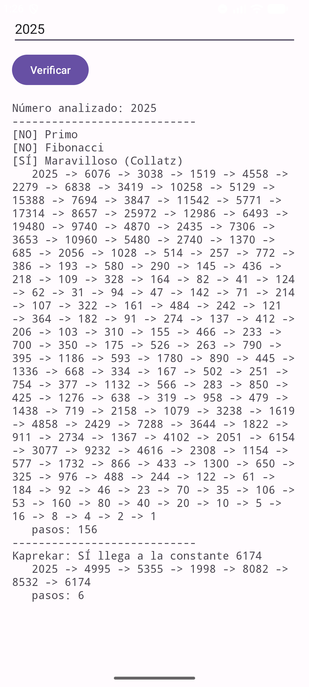

| Asignatura: | Desarrollo de Aplicaciones Móviles Nativas |
| Práctica: | Práctica 4: Operadores y estructuras de control de Kotlin |
| Alumno: | Angel Frausto Robles |
| Grupo: | 7CM4 |
| Fecha: | 12 de septiembre de 2026 |
Esta práctica corresponde al tema "Operadores y estructuras de control de Kotlin" de la Unidad II del programa de la materia. Parte del ejemplo del profesor que verifica si un número natural es primo, y lo extiende con dos ejercicios: comprobar si el número es de Fibonacci y si es un "número maravilloso" (la conjetura de Collatz), y comprobar si un número de 3 o 4 dígitos corresponde a la constante de Kaprekar.
Objetivos:
?:) de Kotlin en un caso real.for, while, when) para resolver los cuatro criterios.
Se creó un proyecto en Android Studio con la plantilla Empty Views Activity y lenguaje Kotlin.
El proyecto usa Android Gradle Plugin 9.3.2 (soporte de Kotlin integrado, sin plugin adicional de
org.jetbrains.kotlin.android), compileSdk/targetSdk 37 y
minSdk 24. La actividad principal es MainActivity, que extiende
AppCompatActivity.
La interfaz se armó con un ScrollView que contiene un LinearLayout
vertical con tres elementos: un EditText para capturar el número natural, un
Button ("Verificar") y un TextView donde se muestra el
resultado de los cuatro análisis. Se usó ScrollView porque la secuencia de Collatz de
algunos números puede ocupar varias líneas de texto.
<ScrollView ...>
<LinearLayout android:orientation="vertical" ...>
<EditText android:id="@+id/xnatural" android:inputType="number"
android:hint="@string/hint_numero" />
<Button android:id="@+id/xboton" android:text="@string/accion_verificar" />
<TextView android:id="@+id/xcalcular" android:fontFamily="monospace" />
</LinearLayout>
</ScrollView>
La función esPrimo descarta los números menores o iguales a 1 y busca divisores hasta la raíz cuadrada del número:
private fun esPrimo(num: Int): Boolean {
if (num <= 1) return false
for (i in 2..sqrt(num.toDouble()).toInt()) {
if (num % i == 0) return false
}
return true
}
Para el Ejercicio 1, esFibonacci genera la sucesión 0, 1, 1, 2, 3, 5... hasta alcanzar o pasar el número; es de Fibonacci si la sucesión cae exactamente en él:
private fun esFibonacci(num: Int): Boolean {
var a = 0
var b = 1
while (a < num) {
val siguiente = a + b
a = b
b = siguiente
}
return a == num
}
El número maravilloso, también del Ejercicio 1, sigue la conjetura de Collatz: si el número es par se divide
entre 2, si es impar se multiplica por 3 y se suma 1, y se repite hasta llegar a 1.
secuenciaMaravilloso usa Long
porque 3n+1 puede exceder el rango de Int:
private fun secuenciaMaravilloso(num: Int): List<Long> {
val secuencia = mutableListOf(num.toLong())
var n = num.toLong()
while (n != 1L && secuencia.size < 1000) {
n = if (n % 2 == 0L) n / 2 else 3 * n + 1
secuencia.add(n)
}
return secuencia
}
El Ejercicio 2 pide la constante de Kaprekar, que solo aplica a números de 3 o 4 dígitos. En cada paso,
pasosKaprekar ordena los dígitos de forma ascendente y descendente y resta el
menor del mayor; la rutina converge a 495 (3 dígitos) o 6174 (4 dígitos), salvo que los dígitos sean todos
iguales:
private fun pasosKaprekar(num: Int): List<Int>? {
val digitos = num.toString().length
if (digitos !in 3..4) return null
val objetivo = if (digitos == 3) 495 else 6174
val pasos = mutableListOf(num)
var n = num
while (n != objetivo && n != 0 && pasos.size < 20) {
val ascendente = n.toString().padStart(digitos, '0').toList().sorted().joinToString("")
val descendente = ascendente.reversed()
n = descendente.toInt() - ascendente.toInt()
pasos.add(n)
}
return pasos
}
Al presionar el botón "Verificar", se valida la entrada con toIntOrNull() ?: -1
(operador Elvis) y, si es válida, se arma el resultado con buildString,
evaluando los cuatro criterios y usando un bloque when para el caso de Kaprekar.
La aplicación se instaló y ejecutó en un emulador Android (Medium Phone, API 36) con adb.
Se probaron los siguientes casos, que en conjunto cubren los cuatro análisis:
| Número | Primo | Fibonacci | Maravilloso | Kaprekar |
|---|---|---|---|---|
| 13 | Sí | Sí | Sí (9 pasos) | No aplica (2 dígitos) |
| 495 | No | No | Sí (97 pasos) | Sí, ya es la constante (495, 0 pasos) |
| 2025 | No | No | Sí (156 pasos) | Sí, llega a 6174 en 6 pasos |




Esta práctica me sirvió para reforzar cómo se combinan las estructuras de control de Kotlin
(for, while, when) con
operadores propios del lenguaje, como el Elvis (?:) para manejar entradas inválidas
sin necesidad de bloques if adicionales. El ejercicio del número maravilloso me
pareció el más interesante: la lógica es muy corta, una condición de paridad y dos operaciones, pero la
secuencia resultante para números como 495 o 2025 puede tardar decenas de pasos en llegar a 1. Es la
conjetura de Collatz: nadie ha demostrado que funcione para todos los números naturales, aunque se ha
comprobado con computadoras para cifras enormes.
La rutina de Kaprekar también deja una idea clara de por qué a veces conviene expresar un cálculo como una secuencia de pasos (una lista) en lugar de solo un resultado final: mostrar los pasos intermedios ayuda a verificar que el algoritmo hace lo que se espera, y en este caso corrobora visualmente que la rutina siempre converge a 495 o 6174 salvo en el caso especial de dígitos repetidos.
https://kotlinlang.org/docs/https://developer.android.com/guidehttps://en.wikipedia.org/wiki/Collatz_conjecturehttps://en.wikipedia.org/wiki/6174_(number)